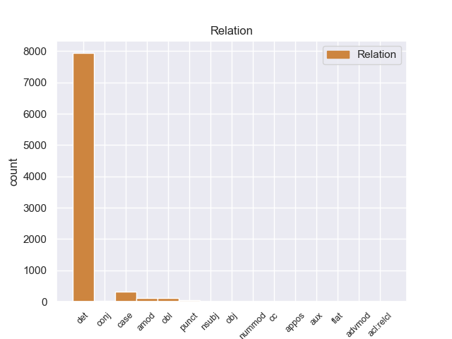
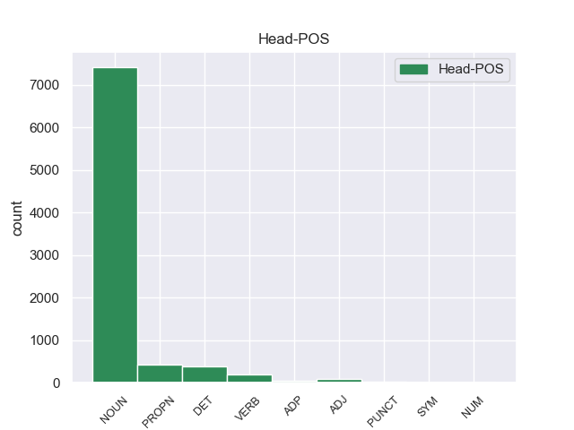
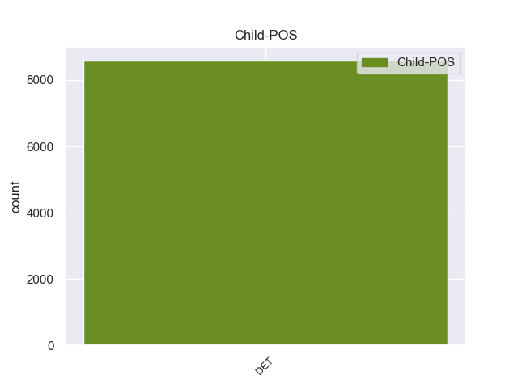

Distribution of features within this leaf



Agreement Rules sorted by frequency.
- When the dependent token is the determiner(det) of the head token, and the dependent token is DET.
1 En _ _ _ _ 0 _ _ _
2 1991 _ _ _ _ 0 _ _ _
3 , _ _ _ _ 0 _ _ _
4 como _ _ _ _ 0 _ _ _
5 ya _ _ _ _ 0 _ _ _
6 está _ _ _ _ 0 _ _ _
7 indicado _ _ _ _ 0 _ _ _
8 en _ _ _ _ 0 _ _ _
9 el _ _ _ _ 0 _ _ _
10 párrafo _ _ _ _ 0 _ _ _
11 anterior _ _ _ _ 0 _ _ _
12 , _ _ _ _ 0 _ _ _
13 se _ _ _ _ 0 _ _ _
14 creó _ _ _ _ 0 _ _ _
15 un _ _ _ _ 0 _ _ _
16 equipo _ _ _ _ 0 _ _ _
17 ad _ _ _ _ 0 _ _ _
18 hoc _ _ _ _ 0 _ _ _
19 para _ _ _ _ 0 _ _ _
20 averiguar _ _ _ _ 0 _ _ _
21 como _ _ _ _ 0 _ _ _
22 se _ _ _ _ 0 _ _ _
23 podía _ _ _ _ 0 _ _ _
24 desarrollar _ _ _ _ 0 _ _ _
25 el _ _ _ _ 0 _ _ _
26 Dialogo _ _ _ _ 0 _ _ _
27 Social _ _ _ _ 0 _ _ _
28 , _ _ _ _ 0 _ _ _
29 este este DET _ Gender=Masc|Number=Sing 30 det _ _
30 equipo equipo NOUN _ Gender=Masc|Number=Sing 0 _ _ _
31 estaba _ _ _ _ 0 _ _ _
32 formado _ _ _ _ 0 _ _ _
33 por _ _ _ _ 0 _ _ _
34 representantes _ _ _ _ 0 _ _ _
35 de _ _ _ _ 0 _ _ _
36 todas _ _ _ _ 0 _ _ _
37 las _ _ _ _ 0 _ _ _
38 organizaciones _ _ _ _ 0 _ _ _
39 relacionadas _ _ _ _ 0 _ _ _
40 con _ _ _ _ 0 _ _ _
41 CES _ _ _ _ 0 _ _ _
42 , _ _ _ _ 0 _ _ _
43 UNICE _ _ _ _ 0 _ _ _
44 y _ _ _ _ 0 _ _ _
45 CEEP _ _ _ _ 0 _ _ _
46 ; _ _ _ _ 0 _ _ _
1 Ahora _ _ _ _ 0 _ _ _
2 se _ _ _ _ 0 _ _ _
3 aunan _ _ _ _ 0 _ _ _
4 cocina _ _ _ _ 0 _ _ _
5 y _ _ _ _ 0 _ _ _
6 entorno _ _ _ _ 0 _ _ _
7 , _ _ _ _ 0 _ _ _
8 me _ _ _ _ 0 _ _ _
9 encanto _ _ _ _ 0 _ _ _
10 la _ _ _ _ 0 _ _ _
11 bodega _ _ _ _ 0 _ _ _
12 , _ _ _ _ 0 _ _ _
13 las _ _ _ _ 0 _ _ _
14 sillas _ _ _ _ 0 _ _ _
15 son _ _ _ _ 0 _ _ _
16 comodisimas _ _ _ _ 0 _ _ _
17 , _ _ _ _ 0 _ _ _
18 la _ _ _ _ 0 _ _ _
19 iluminacion _ _ _ _ 0 _ _ _
20 es _ _ _ _ 0 _ _ _
21 excepcional _ _ _ _ 0 _ _ _
22 , _ _ _ _ 0 _ _ _
23 alcanzas _ _ _ _ 0 _ _ _
24 un _ _ _ _ 0 _ _ _
25 grado _ _ _ _ 0 _ _ _
26 de _ _ _ _ 0 _ _ _
27 satisfaccion _ _ _ _ 0 _ _ _
28 que _ _ _ _ 0 _ _ _
29 no _ _ _ _ 0 _ _ _
30 se _ _ _ _ 0 _ _ _
31 puede puede DET _ Gender=Masc|Number=Sing 32 case _ _
32 describir describir DET _ Gender=Masc|Number=Sing 0 _ _ _
33 , _ _ _ _ 0 _ _ _
34 hay _ _ _ _ 0 _ _ _
35 que _ _ _ _ 0 _ _ _
36 probar _ _ _ _ 0 _ _ _
37 lo _ _ _ _ 0 _ _ _
38 , _ _ _ _ 0 _ _ _
39 es _ _ _ _ 0 _ _ _
40 la _ _ _ _ 0 _ _ _
41 primera _ _ _ _ 0 _ _ _
42 vez _ _ _ _ 0 _ _ _
43 en _ _ _ _ 0 _ _ _
44 mi _ _ _ _ 0 _ _ _
45 vda _ _ _ _ 0 _ _ _
46 que _ _ _ _ 0 _ _ _
47 una _ _ _ _ 0 _ _ _
48 cocina _ _ _ _ 0 _ _ _
49 me _ _ _ _ 0 _ _ _
50 emociona _ _ _ _ 0 _ _ _
51 hasta _ _ _ _ 0 _ _ _
52 ese _ _ _ _ 0 _ _ _
53 punto _ _ _ _ 0 _ _ _
54 . _ _ _ _ 0 _ _ _
1 Su _ _ _ _ 0 _ _ _
2 inauguración _ _ _ _ 0 _ _ _
3 está _ _ _ _ 0 _ _ _
4 prevista prevista NOUN _ Gender=Masc|Number=Sing 0 _ _ _
5 durante _ _ _ _ 0 _ _ _
6 el _ _ _ _ 0 _ _ _
7 año año DET _ Gender=Masc|Number=Sing 4 obl _ _
8 2011 _ _ _ _ 0 _ _ _
9 . _ _ _ _ 0 _ _ _
1 Tebacas _ _ _ _ 0 _ _ _
2 fue _ _ _ _ 0 _ _ _
3 un _ _ _ _ 0 _ _ _
4 pueblo _ _ _ _ 0 _ _ _
5 indígena _ _ _ _ 0 _ _ _
6 que _ _ _ _ 0 _ _ _
7 habitó _ _ _ _ 0 _ _ _
8 en _ _ _ _ 0 _ _ _
9 los _ _ _ _ 0 _ _ _
10 municipios _ _ _ _ 0 _ _ _
11 de _ _ _ _ 0 _ _ _
12 Culiacán _ _ _ _ 0 _ _ _
13 y _ _ _ _ 0 _ _ _
14 Badiraguato _ _ _ _ 0 _ _ _
15 hasta _ _ _ _ 0 _ _ _
16 colindar colindar DET _ Gender=Masc|Number=Sing 19 amod _ _
17 con _ _ _ _ 0 _ _ _
18 el _ _ _ _ 0 _ _ _
19 grupo grupo NOUN _ Gender=Masc|Number=Sing 0 _ _ _
20 cahita _ _ _ _ 0 _ _ _
21 de _ _ _ _ 0 _ _ _
22 los _ _ _ _ 0 _ _ _
23 sinaloas _ _ _ _ 0 _ _ _
24 . _ _ _ _ 0 _ _ _
1 Ha _ _ _ _ 0 _ _ _
2 sido _ _ _ _ 0 _ _ _
3 Presidente _ _ _ _ 0 _ _ _
4 de _ _ _ _ 0 _ _ _
5 el _ _ _ _ 0 _ _ _
6 Comité comité NOUN _ Gender=Masc|Number=Sing 0 _ _ _
7 de _ _ _ _ 0 _ _ _
8 la _ _ _ _ 0 _ _ _
9 Asamblea _ _ _ _ 0 _ _ _
10 de _ _ _ _ 0 _ _ _
11 Gobernadores _ _ _ _ 0 _ _ _
12 de _ _ _ _ 0 _ _ _
13 el _ _ _ _ 0 _ _ _
14 Banco _ _ _ _ 0 _ _ _
15 Interamericano _ _ _ _ 0 _ _ _
16 de _ _ _ _ 0 _ _ _
17 Desarrollo _ _ _ _ 0 _ _ _
18 ( _ _ _ _ 0 _ _ _
19 BID _ _ _ _ 0 _ _ _
20 ) _ _ _ _ 0 _ _ _
21 ; ; DET _ Gender=Masc|Number=Sing 6 punct _ _
1 En _ _ _ _ 0 _ _ _
2 la _ _ _ _ 0 _ _ _
3 capital _ _ _ _ 0 _ _ _
4 financiera _ _ _ _ 0 _ _ _
5 de _ _ _ _ 0 _ _ _
6 Pakistán _ _ _ _ 0 _ _ _
7 son _ _ _ _ 0 _ _ _
8 frecuentes _ _ _ _ 0 _ _ _
9 los _ _ _ _ 0 _ _ _
10 llamados llamados DET _ Gender=Masc|Number=Sing 14 conj _ _
11 asesinatos _ _ _ _ 0 _ _ _
12 selectivos _ _ _ _ 0 _ _ _
13 , _ _ _ _ 0 _ _ _
14 planeados planeados VERB _ Gender=Masc|Number=Sing 0 _ _ _
15 por _ _ _ _ 0 _ _ _
16 bandas _ _ _ _ 0 _ _ _
17 criminales _ _ _ _ 0 _ _ _
18 a _ _ _ _ 0 _ _ _
19 menudo _ _ _ _ 0 _ _ _
20 ligadas _ _ _ _ 0 _ _ _
21 a _ _ _ _ 0 _ _ _
22 siglas _ _ _ _ 0 _ _ _
23 políticas _ _ _ _ 0 _ _ _
24 . _ _ _ _ 0 _ _ _
1 El _ _ _ _ 0 _ _ _
2 Doctor doctor NOUN _ Definite=Def|Gender=Masc|Number=Sing|PronType=Art 0 _ _ _
3 Boskonovitch _ _ _ _ 0 _ _ _
4 y _ _ _ _ 0 _ _ _
5 Yoshimitsu _ _ _ _ 0 _ _ _
6 están _ _ _ _ 0 _ _ _
7 en _ _ _ _ 0 _ _ _
8 los _ _ _ _ 0 _ _ _
9 laboratorios _ _ _ _ 0 _ _ _
10 de _ _ _ _ 0 _ _ _
11 el _ _ _ _ 0 _ _ _
12 primero primero DET _ Gender=Masc|Number=Sing 2 nsubj _ _
13 , _ _ _ _ 0 _ _ _
14 observan _ _ _ _ 0 _ _ _
15 a _ _ _ _ 0 _ _ _
16 un _ _ _ _ 0 _ _ _
17 ratón _ _ _ _ 0 _ _ _
18 que _ _ _ _ 0 _ _ _
19 está _ _ _ _ 0 _ _ _
20 bebiendo _ _ _ _ 0 _ _ _
21 la _ _ _ _ 0 _ _ _
22 sangre _ _ _ _ 0 _ _ _
23 de _ _ _ _ 0 _ _ _
24 Ogre _ _ _ _ 0 _ _ _
25 , _ _ _ _ 0 _ _ _
26 de _ _ _ _ 0 _ _ _
27 repente _ _ _ _ 0 _ _ _
28 los _ _ _ _ 0 _ _ _
29 dos _ _ _ _ 0 _ _ _
30 salen _ _ _ _ 0 _ _ _
31 corriendo _ _ _ _ 0 _ _ _
32 , _ _ _ _ 0 _ _ _
33 cuando _ _ _ _ 0 _ _ _
34 el _ _ _ _ 0 _ _ _
35 ratón _ _ _ _ 0 _ _ _
36 se _ _ _ _ 0 _ _ _
37 vuelve _ _ _ _ 0 _ _ _
38 gigante _ _ _ _ 0 _ _ _
39 y _ _ _ _ 0 _ _ _
40 destruye _ _ _ _ 0 _ _ _
41 el _ _ _ _ 0 _ _ _
42 laboratorio _ _ _ _ 0 _ _ _
43 . _ _ _ _ 0 _ _ _
1 Hernández _ _ _ _ 0 _ _ _
2 Balcázar _ _ _ _ 0 _ _ _
3 recibió _ _ _ _ 0 _ _ _
4 elogios _ _ _ _ 0 _ _ _
5 por _ _ _ _ 0 _ _ _
6 parte _ _ _ _ 0 _ _ _
7 de _ _ _ _ 0 _ _ _
8 Ferguson _ _ _ _ 0 _ _ _
9 a _ _ _ _ 0 _ _ _
10 el _ _ _ _ 0 _ _ _
11 ser _ _ _ _ 0 _ _ _
12 el _ _ _ _ 0 _ _ _
13 primer _ _ _ _ 0 _ _ _
14 delantero delantero DET _ Gender=Masc|Number=Sing 20 obj _ _
15 desde _ _ _ _ 0 _ _ _
16 Ruud _ _ _ _ 0 _ _ _
17 van _ _ _ _ 0 _ _ _
18 Nistelrooy _ _ _ _ 0 _ _ _
19 en _ _ _ _ 0 _ _ _
20 anotar anotar VERB _ Gender=Masc|Number=Sing 0 _ _ _
21 20 _ _ _ _ 0 _ _ _
22 goles _ _ _ _ 0 _ _ _
23 en _ _ _ _ 0 _ _ _
24 su _ _ _ _ 0 _ _ _
25 temporada _ _ _ _ 0 _ _ _
26 debut _ _ _ _ 0 _ _ _
27 en _ _ _ _ 0 _ _ _
28 el _ _ _ _ 0 _ _ _
29 equipo _ _ _ _ 0 _ _ _
30 . _ _ _ _ 0 _ _ _
1 Los _ _ _ _ 0 _ _ _
2 otros _ _ _ _ 0 _ _ _
3 equipos _ _ _ _ 0 _ _ _
4 donde _ _ _ _ 0 _ _ _
5 militaría _ _ _ _ 0 _ _ _
6 son _ _ _ _ 0 _ _ _
7 Bosco _ _ _ _ 0 _ _ _
8 La _ _ _ _ 0 _ _ _
9 Coruña _ _ _ _ 0 _ _ _
10 ( _ _ _ _ 0 _ _ _
11 1983 _ _ _ _ 0 _ _ _
12 / _ _ _ _ 0 _ _ _
13 84 _ _ _ _ 0 _ _ _
14 y _ _ _ _ 0 _ _ _
15 1986 _ _ _ _ 0 _ _ _
16 / _ _ _ _ 0 _ _ _
17 87 _ _ _ _ 0 _ _ _
18 ) _ _ _ _ 0 _ _ _
19 , _ _ _ _ 0 _ _ _
20 CB _ _ _ _ 0 _ _ _
21 Guadalajara _ _ _ _ 0 _ _ _
22 ( _ _ _ _ 0 _ _ _
23 1984 _ _ _ _ 0 _ _ _
24 / _ _ _ _ 0 _ _ _
25 85 _ _ _ _ 0 _ _ _
26 ) _ _ _ _ 0 _ _ _
27 , _ _ _ _ 0 _ _ _
28 Estudiantes _ _ _ _ 0 _ _ _
29 ( _ _ _ _ 0 _ _ _
30 1987 _ _ _ _ 0 _ _ _
31 / _ _ _ _ 0 _ _ _
32 89 _ _ _ _ 0 _ _ _
33 ) _ _ _ _ 0 _ _ _
34 , _ _ _ _ 0 _ _ _
35 Cajamadrid _ _ _ _ 0 _ _ _
36 ( _ _ _ _ 0 _ _ _
37 1989 _ _ _ _ 0 _ _ _
38 / _ _ _ _ 0 _ _ _
39 90 _ _ _ _ 0 _ _ _
40 ) _ _ _ _ 0 _ _ _
41 , _ _ _ _ 0 _ _ _
42 Azuqueca _ _ _ _ 0 _ _ _
43 ( _ _ _ _ 0 _ _ _
44 1990 _ _ _ _ 0 _ _ _
45 / _ _ _ _ 0 _ _ _
46 91 91 DET _ Gender=Masc|Number=Sing 51 nummod _ _
47 ) _ _ _ _ 0 _ _ _
48 y _ _ _ _ 0 _ _ _
49 Bansander _ _ _ _ 0 _ _ _
50 ( _ _ _ _ 0 _ _ _
51 1992 1992 NUM _ Gender=Masc|Number=Sing 0 _ _ _
52 / _ _ _ _ 0 _ _ _
53 93 _ _ _ _ 0 _ _ _
54 ) _ _ _ _ 0 _ _ _
55 . _ _ _ _ 0 _ _ _
1 Así _ _ _ _ 0 _ _ _
2 , _ _ _ _ 0 _ _ _
3 si _ _ _ _ 0 _ _ _
4 por _ _ _ _ 0 _ _ _
5 ejemplo _ _ _ _ 0 _ _ _
6 queremos _ _ _ _ 0 _ _ _
7 valorar valorar VERB _ Gender=Masc|Number=Sing 0 _ _ _
8 la _ _ _ _ 0 _ _ _
9 eficacia _ _ _ _ 0 _ _ _
10 de _ _ _ _ 0 _ _ _
11 un _ _ _ _ 0 _ _ _
12 anuncio _ _ _ _ 0 _ _ _
13 televisivo _ _ _ _ 0 _ _ _
14 para _ _ _ _ 0 _ _ _
15 evitar _ _ _ _ 0 _ _ _
16 los _ _ _ _ 0 _ _ _
17 accidentes _ _ _ _ 0 _ _ _
18 de _ _ _ _ 0 _ _ _
19 tráfico _ _ _ _ 0 _ _ _
20 , _ _ _ _ 0 _ _ _
21 los _ _ _ _ 0 _ _ _
22 factores _ _ _ _ 0 _ _ _
23 pronósticos _ _ _ _ 0 _ _ _
24 serían _ _ _ _ 0 _ _ _
25 muy _ _ _ _ 0 _ _ _
26 variados _ _ _ _ 0 _ _ _
27 ( _ _ _ _ 0 _ _ _
28 edad _ _ _ _ 0 _ _ _
29 , _ _ _ _ 0 _ _ _
30 sexo _ _ _ _ 0 _ _ _
31 , _ _ _ _ 0 _ _ _
32 raza _ _ _ _ 0 _ _ _
33 , _ _ _ _ 0 _ _ _
34 grupo _ _ _ _ 0 _ _ _
35 cultural _ _ _ _ 0 _ _ _
36 , _ _ _ _ 0 _ _ _
37 conducir _ _ _ _ 0 _ _ _
38 con _ _ _ _ 0 _ _ _
39 o _ _ _ _ 0 _ _ _
40 sin _ _ _ _ 0 _ _ _
41 licencia _ _ _ _ 0 _ _ _
42 , _ _ _ _ 0 _ _ _
43 etc. _ _ _ _ 0 _ _ _
44 ) _ _ _ _ 0 _ _ _
45 a _ _ _ _ 0 _ _ _
46 el _ _ _ _ 0 _ _ _
47 igual _ _ _ _ 0 _ _ _
48 que _ _ _ _ 0 _ _ _
49 los _ _ _ _ 0 _ _ _
50 gradientes _ _ _ _ 0 _ _ _
51 presentes _ _ _ _ 0 _ _ _
52 ( _ _ _ _ 0 _ _ _
53 antigüedad _ _ _ _ 0 _ _ _
54 en _ _ _ _ 0 _ _ _
55 la _ _ _ _ 0 _ _ _
56 licencia _ _ _ _ 0 _ _ _
57 , _ _ _ _ 0 _ _ _
58 nivel _ _ _ _ 0 _ _ _
59 cultural _ _ _ _ 0 _ _ _
60 , _ _ _ _ 0 _ _ _
61 duración _ _ _ _ 0 _ _ _
62 de _ _ _ _ 0 _ _ _
63 la _ _ _ _ 0 _ _ _
64 conducción _ _ _ _ 0 _ _ _
65 , _ _ _ _ 0 _ _ _
66 etc. etc. DET _ Gender=Masc|Number=Sing 7 appos _ _
67 ) _ _ _ _ 0 _ _ _
68 . _ _ _ _ 0 _ _ _
1 Jordi _ _ _ _ 0 _ _ _
2 Alba _ _ _ _ 0 _ _ _
3 ha ha DET _ Gender=Masc|Number=Sing 4 aux _ _
4 manifestado manifestado NOUN _ Gender=Masc|Number=Sing 0 _ _ _
5 que _ _ _ _ 0 _ _ _
6 para _ _ _ _ 0 _ _ _
7 él _ _ _ _ 0 _ _ _
8 " _ _ _ _ 0 _ _ _
9 es _ _ _ _ 0 _ _ _
10 un _ _ _ _ 0 _ _ _
11 día _ _ _ _ 0 _ _ _
12 especial _ _ _ _ 0 _ _ _
13 " _ _ _ _ 0 _ _ _
14 . _ _ _ _ 0 _ _ _
1 Además _ _ _ _ 0 _ _ _
2 , _ _ _ _ 0 _ _ _
3 ha _ _ _ _ 0 _ _ _
4 obtenido _ _ _ _ 0 _ _ _
5 licencia _ _ _ _ 0 _ _ _
6 de _ _ _ _ 0 _ _ _
7 TDT _ _ _ _ 0 _ _ _
8 en _ _ _ _ 0 _ _ _
9 toda _ _ _ _ 0 _ _ _
10 la _ _ _ _ 0 _ _ _
11 provincia _ _ _ _ 0 _ _ _
12 de _ _ _ _ 0 _ _ _
13 Guipúzcoa _ _ _ _ 0 _ _ _
14 , _ _ _ _ 0 _ _ _
15 excepto _ _ _ _ 0 _ _ _
16 en _ _ _ _ 0 _ _ _
17 Irún _ _ _ _ 0 _ _ _
18 , _ _ _ _ 0 _ _ _
19 donde _ _ _ _ 0 _ _ _
20 la _ _ _ _ 0 _ _ _
21 ha ha DET _ Gender=Masc|Number=Sing 22 advmod _ _
22 conseguido conseguido VERB _ Gender=Masc|Number=Sing 0 _ _ _
23 Gipuzkoa _ _ _ _ 0 _ _ _
24 Telebista _ _ _ _ 0 _ _ _
25 Txingudi _ _ _ _ 0 _ _ _
26 . _ _ _ _ 0 _ _ _
1 El _ _ _ _ 0 _ _ _
2 7.0 _ _ _ _ 0 _ _ _
3 por _ _ _ _ 0 _ _ _
4 ciento _ _ _ _ 0 _ _ _
5 de _ _ _ _ 0 _ _ _
6 los _ _ _ _ 0 _ _ _
7 alumnos _ _ _ _ 0 _ _ _
8 indígenas _ _ _ _ 0 _ _ _
9 cursan _ _ _ _ 0 _ _ _
10 la _ _ _ _ 0 _ _ _
11 educación _ _ _ _ 0 _ _ _
12 inicial _ _ _ _ 0 _ _ _
13 , _ _ _ _ 0 _ _ _
14 el _ _ _ _ 0 _ _ _
15 8.0 _ _ _ _ 0 _ _ _
16 la _ _ _ _ 0 _ _ _
17 preescolar _ _ _ _ 0 _ _ _
18 , _ _ _ _ 0 _ _ _
19 el _ _ _ _ 0 _ _ _
20 64.4 64.4 DET _ Gender=Masc|Number=Sing 32 cc _ _
21 la _ _ _ _ 0 _ _ _
22 primaria _ _ _ _ 0 _ _ _
23 , _ _ _ _ 0 _ _ _
24 el _ _ _ _ 0 _ _ _
25 16.5 _ _ _ _ 0 _ _ _
26 la _ _ _ _ 0 _ _ _
27 secundaria _ _ _ _ 0 _ _ _
28 , _ _ _ _ 0 _ _ _
29 principalmente _ _ _ _ 0 _ _ _
30 en _ _ _ _ 0 _ _ _
31 la _ _ _ _ 0 _ _ _
32 modalidad modalidad NOUN _ Gender=Masc|Number=Sing 0 _ _ _
33 de _ _ _ _ 0 _ _ _
34 telesecundaria _ _ _ _ 0 _ _ _
35 , _ _ _ _ 0 _ _ _
36 el _ _ _ _ 0 _ _ _
37 4.0 _ _ _ _ 0 _ _ _
38 la _ _ _ _ 0 _ _ _
39 media _ _ _ _ 0 _ _ _
40 superior _ _ _ _ 0 _ _ _
41 y _ _ _ _ 0 _ _ _
42 menos _ _ _ _ 0 _ _ _
43 de _ _ _ _ 0 _ _ _
44 el _ _ _ _ 0 _ _ _
45 uno _ _ _ _ 0 _ _ _
46 por _ _ _ _ 0 _ _ _
47 ciento _ _ _ _ 0 _ _ _
48 la _ _ _ _ 0 _ _ _
49 educación _ _ _ _ 0 _ _ _
50 superior _ _ _ _ 0 _ _ _
51 ; _ _ _ _ 0 _ _ _
1 Power _ _ _ _ 0 _ _ _
2 Man _ _ _ _ 0 _ _ _
3 , _ _ _ _ 0 _ _ _
4 Spider _ _ _ _ 0 _ _ _
5 - _ _ _ _ 0 _ _ _
6 Man _ _ _ _ 0 _ _ _
7 , _ _ _ _ 0 _ _ _
8 Lobezno _ _ _ _ 0 _ _ _
9 , _ _ _ _ 0 _ _ _
10 Doctor _ _ _ _ 0 _ _ _
11 Extraño _ _ _ _ 0 _ _ _
12 , _ _ _ _ 0 _ _ _
13 Spider spider PROPN _ Gender=Masc|Number=Sing 0 _ _ _
14 - _ _ _ _ 0 _ _ _
15 Woman _ _ _ _ 0 _ _ _
16 , _ _ _ _ 0 _ _ _
17 Iron _ _ _ _ 0 _ _ _
18 Fist _ _ _ _ 0 _ _ _
19 , _ _ _ _ 0 _ _ _
20 y _ _ _ _ 0 _ _ _
21 el _ _ _ _ 0 _ _ _
22 nuevo _ _ _ _ 0 _ _ _
23 Ojo ojo DET _ Gender=Masc|Number=Sing 13 flat _ _
24 de _ _ _ _ 0 _ _ _
25 Halcón _ _ _ _ 0 _ _ _
26 la _ _ _ _ 0 _ _ _
27 rescatan _ _ _ _ 0 _ _ _
28 y _ _ _ _ 0 _ _ _
29 escapan _ _ _ _ 0 _ _ _
30 , _ _ _ _ 0 _ _ _
31 dejando _ _ _ _ 0 _ _ _
32 a _ _ _ _ 0 _ _ _
33 Elektra _ _ _ _ 0 _ _ _
34 furiosa _ _ _ _ 0 _ _ _
35 y _ _ _ _ 0 _ _ _
36 mandando _ _ _ _ 0 _ _ _
37 a _ _ _ _ 0 _ _ _
38 la _ _ _ _ 0 _ _ _
39 Mano _ _ _ _ 0 _ _ _
40 tras _ _ _ _ 0 _ _ _
41 ellos _ _ _ _ 0 _ _ _
42 . _ _ _ _ 0 _ _ _
1 Desde _ _ _ _ 0 _ _ _
2 unas _ _ _ _ 0 _ _ _
3 raciones _ _ _ _ 0 _ _ _
4 en _ _ _ _ 0 _ _ _
5 la _ _ _ _ 0 _ _ _
6 terraza _ _ _ _ 0 _ _ _
7 hasta _ _ _ _ 0 _ _ _
8 un _ _ _ _ 0 _ _ _
9 arroz _ _ _ _ 0 _ _ _
10 con _ _ _ _ 0 _ _ _
11 bogavante _ _ _ _ 0 _ _ _
12 en _ _ _ _ 0 _ _ _
13 el _ _ _ _ 0 _ _ _
14 comedor _ _ _ _ 0 _ _ _
15 , _ _ _ _ 0 _ _ _
16 todo _ _ _ _ 0 _ _ _
17 lo _ _ _ _ 0 _ _ _
18 que _ _ _ _ 0 _ _ _
19 he _ _ _ _ 0 _ _ _
20 comido _ _ _ _ 0 _ _ _
21 en _ _ _ _ 0 _ _ _
22 El _ _ _ _ 0 _ _ _
23 Llagar _ _ _ _ 0 _ _ _
24 es _ _ _ _ 0 _ _ _
25 de _ _ _ _ 0 _ _ _
26 altísimo _ _ _ _ 0 _ _ _
27 nivel _ _ _ _ 0 _ _ _
28 , _ _ _ _ 0 _ _ _
29 a _ _ _ _ 0 _ _ _
30 pesar _ _ _ _ 0 _ _ _
31 de _ _ _ _ 0 _ _ _
32 que _ _ _ _ 0 _ _ _
33 carece _ _ _ _ 0 _ _ _
34 de _ _ _ _ 0 _ _ _
35 pretensiones pretensiones PROPN _ Gender=Masc|Number=Sing 0 _ _ _
36 y _ _ _ _ 0 _ _ _
37 tiene _ _ _ _ 0 _ _ _
38 el _ _ _ _ 0 _ _ _
39 orgullo orgullo DET _ Gender=Masc|Number=Sing 35 acl:relcl _ _
40 de _ _ _ _ 0 _ _ _
41 ser _ _ _ _ 0 _ _ _
42 un _ _ _ _ 0 _ _ _
43 restaurante _ _ _ _ 0 _ _ _
44 de _ _ _ _ 0 _ _ _
45 barrio _ _ _ _ 0 _ _ _
46 . _ _ _ _ 0 _ _ _
Disagree Examples:
1 Por _ _ _ _ 0 _ _ _
2 su _ _ _ _ 0 _ _ _
3 parte _ _ _ _ 0 _ _ _
4 , _ _ _ _ 0 _ _ _
5 Adrián _ _ _ _ 0 _ _ _
6 Guillermo _ _ _ _ 0 _ _ _
7 Aguilar _ _ _ _ 0 _ _ _
8 , _ _ _ _ 0 _ _ _
9 en _ _ _ _ 0 _ _ _
10 el _ _ _ _ 0 _ _ _
11 artículo _ _ _ _ 0 _ _ _
12 Los _ _ _ _ 0 _ _ _
13 asentamientos _ _ _ _ 0 _ _ _
14 humanos _ _ _ _ 0 _ _ _
15 y _ _ _ _ 0 _ _ _
16 el _ _ _ _ 0 _ _ _
17 cambio _ _ _ _ 0 _ _ _
18 climático _ _ _ _ 0 _ _ _
19 en _ _ _ _ 0 _ _ _
20 México _ _ _ _ 0 _ _ _
21 , _ _ _ _ 0 _ _ _
22 escenario _ _ _ _ 0 _ _ _
23 futuro _ _ _ _ 0 _ _ _
24 de _ _ _ _ 0 _ _ _
25 vulnerabilidad _ _ _ _ 0 _ _ _
26 regional _ _ _ _ 0 _ _ _
27 , _ _ _ _ 0 _ _ _
28 destaca _ _ _ _ 0 _ _ _
29 que _ _ _ _ 0 _ _ _
30 los _ _ _ _ 0 _ _ _
31 mayores _ _ _ _ 0 _ _ _
32 impactos _ _ _ _ 0 _ _ _
33 que _ _ _ _ 0 _ _ _
34 se _ _ _ _ 0 _ _ _
35 prevén _ _ _ _ 0 _ _ _
36 en _ _ _ _ 0 _ _ _
37 el el DET _ Definite=Def|Gender=Masc|Number=Sing|PronType=Art 38 det _ _
38 área área NOUN _ Gender=Fem|Number=Sing 0 _ _ _
39 de _ _ _ _ 0 _ _ _
40 la _ _ _ _ 0 _ _ _
41 salud _ _ _ _ 0 _ _ _
42 por _ _ _ _ 0 _ _ _
43 el _ _ _ _ 0 _ _ _
44 calentamiento _ _ _ _ 0 _ _ _
45 generalizado _ _ _ _ 0 _ _ _
46 de _ _ _ _ 0 _ _ _
47 la _ _ _ _ 0 _ _ _
48 atmósfera _ _ _ _ 0 _ _ _
49 son _ _ _ _ 0 _ _ _
50 : _ _ _ _ 0 _ _ _
51 aumento _ _ _ _ 0 _ _ _
52 en _ _ _ _ 0 _ _ _
53 la _ _ _ _ 0 _ _ _
54 mortalidad _ _ _ _ 0 _ _ _
55 y _ _ _ _ 0 _ _ _
56 en _ _ _ _ 0 _ _ _
57 los _ _ _ _ 0 _ _ _
58 niveles _ _ _ _ 0 _ _ _
59 de _ _ _ _ 0 _ _ _
60 desconfort _ _ _ _ 0 _ _ _
61 , _ _ _ _ 0 _ _ _
62 debido _ _ _ _ 0 _ _ _
63 a _ _ _ _ 0 _ _ _
64 las _ _ _ _ 0 _ _ _
65 altas _ _ _ _ 0 _ _ _
66 temperaturas _ _ _ _ 0 _ _ _
67 , _ _ _ _ 0 _ _ _
68 y _ _ _ _ 0 _ _ _
69 un _ _ _ _ 0 _ _ _
70 cambio _ _ _ _ 0 _ _ _
71 en _ _ _ _ 0 _ _ _
72 la _ _ _ _ 0 _ _ _
73 distribución _ _ _ _ 0 _ _ _
74 de _ _ _ _ 0 _ _ _
75 los _ _ _ _ 0 _ _ _
76 vectores _ _ _ _ 0 _ _ _
77 de _ _ _ _ 0 _ _ _
78 varias _ _ _ _ 0 _ _ _
79 enfermedades _ _ _ _ 0 _ _ _
80 infecciosas _ _ _ _ 0 _ _ _
81 , _ _ _ _ 0 _ _ _
82 que _ _ _ _ 0 _ _ _
83 se _ _ _ _ 0 _ _ _
84 desplazarían _ _ _ _ 0 _ _ _
85 a _ _ _ _ 0 _ _ _
86 latitudes _ _ _ _ 0 _ _ _
87 norte _ _ _ _ 0 _ _ _
88 . _ _ _ _ 0 _ _ _
1 Ella _ _ _ _ 0 _ _ _
2 a _ _ _ _ 0 _ _ _
3 el _ _ _ _ 0 _ _ _
4 enterar enterar NOUN _ Gender=Masc|Number=Sing 0 _ _ _
5 se _ _ _ _ 0 _ _ _
6 de _ _ _ _ 0 _ _ _
7 que _ _ _ _ 0 _ _ _
8 él él DET _ Definite=Def|Gender=Fem|Number=Sing|PronType=Art 4 det _ _
9 podía _ _ _ _ 0 _ _ _
10 estar _ _ _ _ 0 _ _ _
11 vivo _ _ _ _ 0 _ _ _
12 , _ _ _ _ 0 _ _ _
13 gracias _ _ _ _ 0 _ _ _
14 a _ _ _ _ 0 _ _ _
15 Daniel _ _ _ _ 0 _ _ _
16 , _ _ _ _ 0 _ _ _
17 insiste _ _ _ _ 0 _ _ _
18 en _ _ _ _ 0 _ _ _
19 ir _ _ _ _ 0 _ _ _
20 también _ _ _ _ 0 _ _ _
21 . _ _ _ _ 0 _ _ _
1 Su _ _ _ _ 0 _ _ _
2 grabación grabación NOUN _ Gender=Fem|Number=Sing 0 _ _ _
3 de _ _ _ _ 0 _ _ _
4 Las _ _ _ _ 0 _ _ _
5 cuatro cuatro DET _ Gender=Masc|Number=Sing 2 det _ _
6 estaciones _ _ _ _ 0 _ _ _
7 de _ _ _ _ 0 _ _ _
8 Vivaldi _ _ _ _ 0 _ _ _
9 es _ _ _ _ 0 _ _ _
10 un _ _ _ _ 0 _ _ _
11 buen _ _ _ _ 0 _ _ _
12 ejemplo _ _ _ _ 0 _ _ _
13 de _ _ _ _ 0 _ _ _
14 su _ _ _ _ 0 _ _ _
15 estilo _ _ _ _ 0 _ _ _
16 . _ _ _ _ 0 _ _ _
1 Su _ _ _ _ 0 _ _ _
2 grabación grabación NOUN _ Gender=Fem|Number=Sing 0 _ _ _
3 de _ _ _ _ 0 _ _ _
4 Las _ _ _ _ 0 _ _ _
5 cuatro _ _ _ _ 0 _ _ _
6 estaciones _ _ _ _ 0 _ _ _
7 de _ _ _ _ 0 _ _ _
8 Vivaldi _ _ _ _ 0 _ _ _
9 es _ _ _ _ 0 _ _ _
10 un _ _ _ _ 0 _ _ _
11 buen buen DET _ Gender=Masc|Number=Sing 2 det _ _
12 ejemplo _ _ _ _ 0 _ _ _
13 de _ _ _ _ 0 _ _ _
14 su _ _ _ _ 0 _ _ _
15 estilo _ _ _ _ 0 _ _ _
16 . _ _ _ _ 0 _ _ _
1 Su _ _ _ _ 0 _ _ _
2 grabación grabación NOUN _ Gender=Fem|Number=Sing 0 _ _ _
3 de _ _ _ _ 0 _ _ _
4 Las _ _ _ _ 0 _ _ _
5 cuatro _ _ _ _ 0 _ _ _
6 estaciones _ _ _ _ 0 _ _ _
7 de _ _ _ _ 0 _ _ _
8 Vivaldi _ _ _ _ 0 _ _ _
9 es _ _ _ _ 0 _ _ _
10 un _ _ _ _ 0 _ _ _
11 buen _ _ _ _ 0 _ _ _
12 ejemplo ejemplo DET _ Gender=Masc|Number=Sing 2 det _ _
13 de _ _ _ _ 0 _ _ _
14 su _ _ _ _ 0 _ _ _
15 estilo _ _ _ _ 0 _ _ _
16 . _ _ _ _ 0 _ _ _